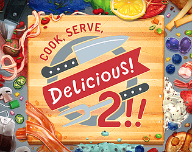

|  | |
| Tempo de jogo | Não Jogado |
| Última Atividade | Nunca |
| Adicionado | 02/04/2025 18:03:07 |
| Modificado | 02/04/2025 18:04:37 |
| Status de Conclusão | Not Played |
| Biblioteca | Itch.io |
| Fonte | itch.io |
| Plataforma | PC (Windows) |
| Data de Lançamento | 02/03/2019 |
| Pontuação da Comunidade | 79 |
| Avaliação da crítica | 82 |
| Pontuação do Usuário | |
| Gênero | Indie Simulator Strategy |
| Desenvolvedor | Vertigo Gaming |
| Editor | Vertigo Gaming |
| Funções | Co-Operative Multiplayer Single Player |
| Links | Official Steam Wikipedia Itch GOG Epic Discord YouTube Twitch |
| Tag | [GGDeals] Synced |
Cook, Serve, Delicious! 2!! is the massive sequel to the surprise best selling original, one of the few games that gives players complete control on how they want to build their restaurant.
The game starts like any other morning at SherriSoda Tower as you take the elevator up to open Cook, Serve, Delicious!, a platinum star restaurant that was surging in popularity thanks to your amazing chef and management skills. Just then, a swarm of police surround SherriSoda Tower. It seems the SherriSoda head executives were secretly stealing funds from the company at the same time they were incurring a staggering amount of debt, draining the accounts of the tower and several of the businesses inside of it, including CSD. Just like that, the tower was closed and put up for federal auction, including everything inside of it. It was all over… the Cook, Serve, Delicious! restaurant was no more.
Angry but determined to rebuild, you’ve scrounged up all of your personal life’s savings and bought commercial space inside the Teragon Supertower, the largest skyscraper in the city. It’s here that you will start a brand new Cook, Serve, Delicious! restaurant, build it back to its former glory, and rebuild your legacy as the best chef in the world.
Features include: